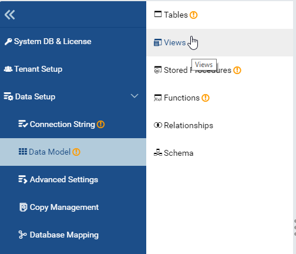
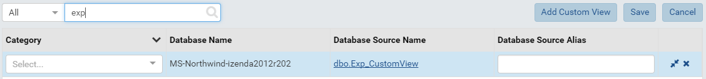
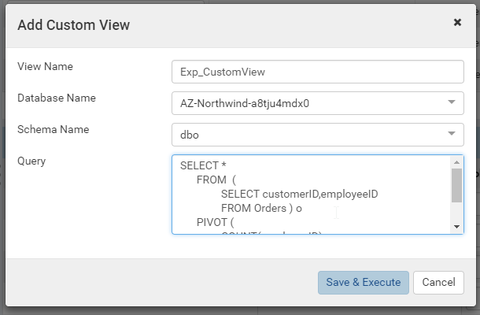
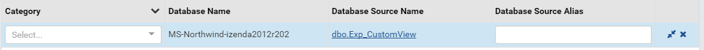
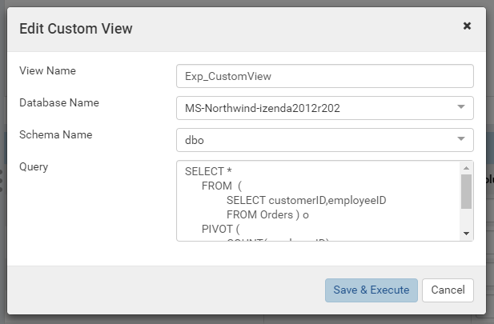

Custom View Setup Guide¶
Tip
Custom View is available from release 2.4.0
The Custom View allows user to add user-defined views using SQL SELECT query.
In the Custom View, user can limit data source fields, combine fields from multiple data sources or aggregate data into the result view.
SELECT *
FROM (
SELECT customerID,employeeID
FROM Orders ) o
PIVOT (
COUNT(employeeID)
FOR employeeID IN ([1],[2],[3],[4],[5],[6],[7],[8],[9] ) ) p
The above query uses SQL Server’s native function PIVOT, which is faster to set up than using a Pivot Grid.
Add Custom View¶
In browser, log in to Izenda as a user with Custom View permission.
Click Settings, then Data Setup then Data Model in the left menu.
Select the Setting Level: either System or a specific tenant.
Click Views in the Middle Panel.
Fig. 84 Data Model - View
Click on Add Custom View button to open the Add Custom View popup.
Fig. 85 Data Model - Add Custom View Button
Input all required information.
- Input Custom View Name
- Select one Database Name.
- Select one Schema Name
- Enter a SELECT queryFig. 86 Data Model - Add Custom View Popup
Warning
- User must make sure to include the Tenant ID field if needed (for multi-tenant mode).
- Also, existing hidden filters are not added to this query. Thus, user must add SQL WHERE conditions to apply the filters.
- User can not query cross database in a view. Only selected database in Database Name dropdown can be used.
- No store procedure can be selected in a view.
- User can select multiple chemas in a view (can include or exclude selected chema in Schema Name dropdown).
- User must use underlying tables/views/functions name, not aliases in Data Model.
- Custom View can also use tables/views/functions not included in Data Model. For example table [dbo].[Order Details] can be used even if it is not selected in Data Model.
- User that can access to system databases must ensure that protected data will not be shown in custom view.
Click on Save & Execute button.
Edit Custom View¶
In browser, log in to Izenda as a user with Data Model permission.
Click Settings, then Data Setup then Data Model in the left menu.
Select the Setting Level: either System or a specific tenant.
Click Views in the Middle Panel.
Click on the link of existing custom view name to open the Edit Custom View popup.
Fig. 87 Data Model - An Existing Custom View
Fig. 88 Data Model - Edit Custom View Popup
Modify some fields.
Click on Save & Execute button.